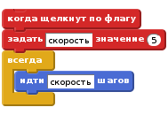
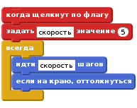
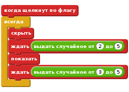
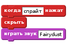
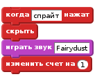
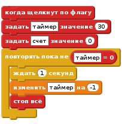

Введение
Этот проект похож на ярморочную игру “Ударь крота”. Вы получаете очки за попадание по привидениям, которые появляются на экране. Цель - получить как можно больше очков за 30 секунд.

ШАГ 1: Создать летающее привидение
Список действий
+. Создайте новый проект.
- Удалите спрайт кота замените фон сцены на природа/woods.
- Используйте кнопку
выбрать спрайт из библиотекичтобы добавить новый спрайт привидения в проект (используйте костюм фантастика/ghost1 ).
Теперь мы хотим заставить наше привидение двигаться
Добавьте
переменнуютолько для этого спрайта, назовите еёскорость.
На Сцене, монитор в верхнем левом углу для этой переменной должен говорить “Ghost1: скорость”.
Если он просто говорит “скорость”, удалите эту переменную и создайте её снова, только для этого спрайта. Уберите галочку рядом с названием переменной в блоке Данные, так, что она не будет отражаться на Сцене.
Переменная скорость будет контролировать, как быстро будет двигаться наше привидение. Мы используем переменную так, что мы можем контроллировать, как быстро движется привидение во время выполнения игры.Мы хотим, чтобы привидение начало двигаться, когда стартует игра, сделайте скрип, вроде этого:

Проверьте ваш проект
Щелкните на зеленый флаг и посмотрите, что делает ваш призрак. Почему он застревает на краю экрана?
Список действий
- Чтобы остановить застревание привидения, мы должны дать возможность идти другим путем, когда оно касается края экрана. Измените ваш существующий скрипт, добавив к нему блок “если на краю, оттолкнуться” (раздел - движение).
move speed stepsblock.

- Чтобы призрак не крутился с ног на голову, выберите стиль вращения “влево-вправо” в информации спрайта.
Проверьте ваш проект
Щелкните на зеленый флаг.
Движется ли призрак от края к краю экрана.
Сохраните ваш проект
Эксперементируйте
- Попробуйте изменить переменную скорость и посмотрите, как движется привидение, быстро или медленно
- Как вы можете сделать привидение летящим всё быстрее, в зависимости от того, как долго оно летает.?
(Это хитрая штука, так что не беспокойтесь, если вы не увидели, как это сделать. Вы получите больше подсказок, по мере работы над проектом.)
ШАГ 2: Сделать призрака появляющимся и пропадающим произвольно
Чтобы сделать игру более веселой, мы хотим, чтобы призрак появлялся и испарялся произвольно, случайно. Мы сделаем это с помощью другого скрипта, который выполняется одновременно с тем, который передвигает призрака. Этот новый скрипт должен спрятать привидение на случайное время, затем показать его на случайное время и повторят это вечно (или пока ишра не закончится)
Список действий
Создайте дополнительный скрипт для призрака:

Проверьте ваш проект
Щелкните на зеленый флаг.
Движется ли призрак по экрану и пропадает ли он и появляется ли снова случайно?
Сохраните ваш проект
Эксперементирйте
- Попробуйте поменять границы для выбора случайного числа. Что происходит, если вы берете слишком большие или слишком маленькие числа?
(Дает ли это вам дополнительные посказки, как увеличивать скорость призрака, по ходу игры?)
ШАГ 3: Сделать призрака пропадающим, при клике по нему мышкой
Чтобы превратить это в игру, мы должны дать игрокам сделать что-то. Они должны кликнуть по призраку, чтобы он исчез. Когда по привидению кликают, мы хотим, чтобы он исчез и издал звук.
Список действий
На закладке Звуки , импортируйте звук из библиотеки электроника/fairydust.
Добавьте этот скрипт к призраку:

Проверьте ваш проект
Щелкните на зеленый флаг.
Исчезает ли призрак и издает ли он звук, когда по нему кликаешь?
Сохраните ваш проект
Эксперементируйте
Спросите учителя, можете ли вы записать собственный звук для проигрывания.
ШАГ 4: Добавить счет и таймер
Мы имеем привидение, но теперь мы хотим сделать игру! Мы хотим получать очки каждый раз, когда мы кликаем на привидение, но так же мы хотим ограничить лимит времени на игру. Мы можем использовать переменные для счета и таймера.
Список действий
- Создайте новую переменную для всех спрайтов, называемую счет, и затем скрипт для привидения, которые увеличивает эту переменную, когда по нему попадают.

- Переключитесь на Сцену и создайте новую переменную (на этот раз только для сцены), с названием таймер. Добавьте новый скрипт, который при нажатии зеленого флага устанавливает “таймер” значением 30 и сбрасывает счет до 0. Затем используйте блок “повторять пока не”, чтобы подождать секунду и затем уменьшить значение переменной таймер на 1. Это должно повторяться пока таймер не станет равным 0, после чего мы используем блок “стоп всё”, чтобы остановить игру.

Проверьте ваш проект
Щелкните на зеленый флаг.
Сохраните ваш проект
Эксперементируйте
- Как увеличивать скорость призрака, с течением хода игры?
- Отличная работы, вы закончили базовую игру. Еще остается много вещей, которые можно сделать с игрой. Попробуйте сделать это, приняв вызов!
Вызов: добавить больше призраков
Один призрак хорошо, а много - лучше! Давайте сделае три призрака, летающих вокруг.
- Сдублируйте призрака в списке спрайтов, нажав на него правой кнопкой мыши.
- Для каждого призрака поправьте размер спрайта, чтобы призраки были разных размеров.
- Для каждого призрака измените переменную скорость, так, чтобы они летали с разными скоростями.
- Переместите призраков по сцене, чтобы они летали в разных местах
Проверьте ваш проект
Щелкните на зеленый флаг.
Вы имеет трех призраков, которые движутся от края до края по экрану, произвольно исчезая и пропадая, и пропадая, когда вы кликаете по ним?
Сохраните ваш проект
Эксперементируйте
- Какое количество призраков подходит для этой игры?
- Вы можете сделать призраков, которые выглядят по разному? Вы можете или отредактировать их костюмы, или использовать блоки из набора Внешность, чтобы изменить их.
- Вы изменить стоимость призраков, так, чтобы они приносили разные очки? Как насчет токо, чтобы сделать самого быстрого (и самого маленького) призрака стоимостью 10 очков?
Отлично, вы закончили, теперь вы можете насладиться игрой!
Не забудьте поделиться вашей игрой с друзьями и семьей, нажав кнопку Поделиться в верхнем правом углу!